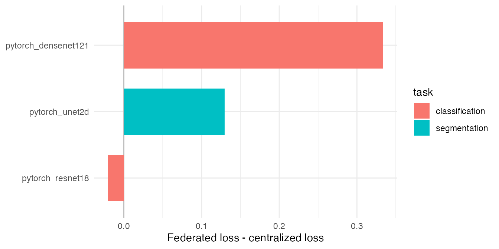

Vision Method Validation Overview
validation-vision-overview.RmdHistorical validation artifact (pre-0.3). The recorded results and API snippets below describe the retired client privacy-profile/Secure Aggregation architecture. They do not validate the current v0.3 lifetime-DP contract and must not be used as deployment or security instructions. See
README.mdand the serverARCHITECTURE.mdfor the enforced contract.
This macro-vignette summarizes the catalogue coverage check for the dsFlower vision templates. The experiment uses synthetic image and mask files staged on the Rock servers, while metadata remains in Opal tables. Each federated run is compared with a centralized PyTorch baseline trained over the pooled files. The current biomedical direct-image evidence is reported separately in the PathMNIST and LUNG1 dsImaging vignettes.
This suite was generated on 2026-05-11T14:01:13.113Z under the sandbox_open profile, across 3 Opal/Rock nodes holding 4 samples each (12 total) at 64x64 resolution.
display <- results[, c(
'method', 'task', 'centralized_metric', 'centralized_loss',
'federated_status', 'federated_loss', 'delta_loss', 'validation_status'
)]
knitr::kable(display, digits = 4)| method | task | centralized_metric | centralized_loss | federated_status | federated_loss | delta_loss | validation_status |
|---|---|---|---|---|---|---|---|
| pytorch_resnet18 | classification | cross_entropy | 0.5605 | ok | 0.5399 | -0.0206 | pass |
| pytorch_densenet121 | classification | cross_entropy | 0.6033 | ok | 0.9373 | 0.3339 | pass |
| pytorch_unet2d | segmentation | dice_bce_loss | 1.3099 | ok | 1.4397 | 0.1298 | pass |
plot_df <- results[is.finite(results$delta_loss), , drop = FALSE]
if (nrow(plot_df) > 0 && requireNamespace('ggplot2', quietly = TRUE)) {
ggplot2::ggplot(plot_df, ggplot2::aes(x = stats::reorder(method, delta_loss), y = delta_loss, fill = task)) +
ggplot2::geom_hline(yintercept = 0, linewidth = 0.3, color = 'grey40') +
ggplot2::geom_col(width = 0.7) +
ggplot2::coord_flip() +
ggplot2::labs(x = NULL, y = 'Federated loss - centralized loss') +
ggplot2::theme_minimal(base_size = 11)
}
Each vision template has its own per-method vignette with the full DataSHIELD/Flower commands and recorded results. The committed evidence artifact is the audit trail consumed by this pkgdown page.